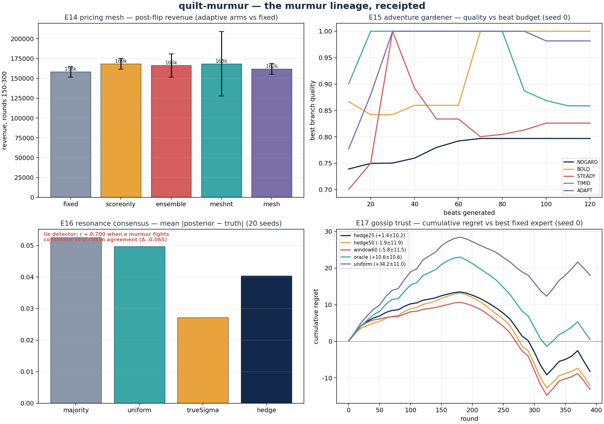

murmur-agent · Murmur · murmur-protocol-v2 · nexus-git-agent · git-agent · git-agent-codespace · git-agent-system · lau-git-agent · decomp-agents · engine-ensign · flux-agent-runtime · cocapn — twelve SuperInstance repos that walked as sequential agents, metamorphosed into a reactive mesh of whispering, trusting, branching, grafting cells.
The envelope {topic, from, p, n, ttl} becomes ordinary cell values; pooling is trust-weighted log-odds computed by formula cells — the wiki dissolves into the sheet.
nexus's 0–100 behavior scores become multiplicative weights with fixed share: regret-bounded, regime-tracking, quarantine for free at w=0.
Branch = copy the factor-estimate cells with a vault-seeded jitter; merge-as-decision becomes graft — transplant the fruit where trust points.
Every decision books a fnv1a64-chained receipt row; alternatives, tradeoffs and scars live in the chain, not a diary.
Branches are Kuramoto oscillators coupled by endorsement agreement; the order parameter r is the scalar a meta-cell reads — a lie detector, not an oracle.
observe→plan→execute compresses to three scalar reads (r, H, regret) and three scalar writes (temperature, prune floor, spawn budget).

| experiment | question | verdict |
|---|---|---|
| E14 pricing mesh | can cells work out a pricing change, no LLM? | yes — pooling ≡ reference math (0 mismatches); adaptation beats fixed post-flip; learned trust modulation open (5 protocol iterations receipted) |
| E15 adventure gardener | branch/prune/graft vs single-path at equal budget? | gardening wins; adaptive bandit ties best fixed policy (honest null at 40-step seasons) |
| E16 resonance consensus | is the Kuramoto order parameter useful to a meta-cell? | as lie detector: yes; as accuracy meter: no (null receipted) |
| E17 gossip trust | do cells learn to trust under non-stationarity? | yes — negative regret, flip tracking; echo vulnerability receipted |
| E18 llm-setup | can the LLM be confined to setup? | yes — hook-and-drop with a whitelist inspector; authored sheet runs LLM-free |